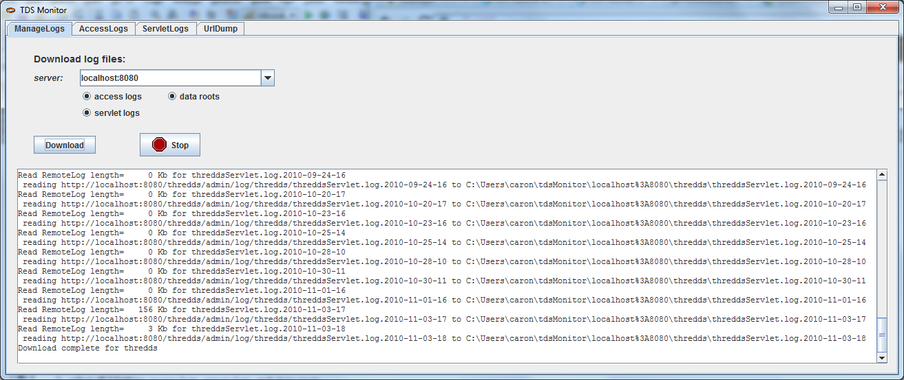

The TdsMonitor ToolThe TdsMonitor Tool
The TdsMonitor ToolThe TdsMonitor Tool
The TdsMonitor tool allows you to fetch the TDS log files onto your local machince, and analyze them locally.
Modify $TOMCAT_HOME/conf/tomcat-users.xml to add a new role with the rolename attribute of tdsMonitor, and add this role to your list of roles:
<tomcat-users> <role rolename="manager"/> <role rolename="tdsConfig"/> <role rolename="tdsMonitor"/> <user name="admin" password="e5e9fa1ba31ecd1ae84f75caaa474f3a663f05f4" roles="manager,tdsConfig,tdsMonitor"/> </tomcat-users>
java -Xmx1024m -classpath toolsUI-4.2.jar thredds.ui.monitor.TdsMonitor
You should see TdsMonitor start:

You should get a security challenge:


The files will be stored in $USER_HOME/tdsMonitor/localhost%3A8080. For production servers, you will need to manage the large number of logs stored here.
The server name will be stored permanently for future use. To remove unwanted servers, right click inside the server comboBox, select Delete, and then click on the server names you want to dlete.
Switch to the AccessLogs tab, and select localhost:8080, which will make the Start Date and End Date fields get filled out. Press the get logs button , and the logs in the selected time range are read in:

Each log entry in the access logs is a row in the table. You can rearrange the columns by dragging on the column headers. You can sort by column by clicking on the column headers.
Select a row, and right click to bring up the context menu. Choose "Resend URL" which takes you to the UrlDump screen. Choose "Get" and the URL will be resent to the server, and the results shown in the text area:

Go to the User tab, and reverse sort by count (click on count column header twice), to see a summary of log access records by IP address. Press the lookup DNS button  to do reverse DNS lookup on the IP address (this is very slow, and you have to scroll the table to force a refresh).
to do reverse DNS lookup on the IP address (this is very slow, and you have to scroll the table to force a refresh).

Select a user, then right click to get the context menu. Select "User requests", which takes you back to the LogTable screen, but only shows the logs that are from the selected user. Press show All logs button to get back to showing all the logs.
Similarly, the Service tab shows the logs summarized by service, and you can drill down to see the individual access calls for a specific service.
Similarly, the DataRoot tab shows the logs summarized by data root, and you can drill down to see the individual access calls for a specific data root. For this to work correctly, you must have selected data roots in the ManageLogs when downloading. This will download the datroot file to $USER_HOME/tdsMonitor/localhost%3A8080/roots.txt. You should refresh it whenver the data roots change on your server.
Go to the TimeSeries tab:

This gives a summary of activity on your server for the selected time period, using 5 minute intervals. The total number of requests, total Mbytes sent, and Average Latency in each 5 minute interval are shown.
The TDS Servlet logs are for debugging and are more low-level than the access logs. They are also bigger and you will want to be careful about examining a manageable subset of them at any one time.
Switch to the ServletLogs tab, and select localhost:8080, which will make the Start Date and End Date fields get filled out. Press the get logs button , and the logs in the selected time range are read in:

The LogTable shows the raw data. You almost always want to look just at the Merged logs, by choosing the Merge tab. For illustration purposes, we have switched to a larger set of logs from motherlode server:

The top table shows groups of logs which are continuous in their reqSeq numbers, so each group indicates that the TDS web application (and/or Tomcat) was restarted between the endDate and startDate of the subsequent group. Select one of these groups to see the logs that are in that group in the lower table.
As with the access log tables, you can rearrange and sort on the columns. Reverse sort on the extra column (by clicking on it twice) to show the logs that have extra information. In this example:

Select one of the rows with extra information, and click on it to bring up the information about that request:

This shows all the information about request 294. The first line shows the information when the request first arrved at the server:
2010-11-03T18:14:15 ISO date/time of the request [312059] msecs since server start [294] request number INFO type of log message thredds.server.opendap.OpendapServlet servlet handling the request (174.100.87.24) IP address /thredds/dodsC/nexrad/level2/IDD/KCLE/
20101103/Level2_KCLE_20101103_2356.ar2v.dds
request path
The second two lines show warning messages from the isop that opened the file. In general, problems will be recorded here, and there may be times when Unidata support will ask you to forward this information to them in order to diagnose issues.
The last line shows the closing messaage after the request has been completed:
2010-11-03T18:14:15 ISO date/time the request was completed [312336] msecs since server start [294] request number INFO type of log message thredds.server.opendap.OpendapServlet servlet handling the request 200 HTTP status return -1 size in bytes of returned content 227 ttoal request time in msecs
In thi case, the result was handled successfully (status return 200), and took 227 msecs. The size is often not known in these logs, indicated by a -1. As you can see, all of the pertinent information is summarized in the table row. Looking at the complete information is usually only done to see what the "extra" log messages are.
The Undone and Misc tabs are used to record messages that dont have a proper start and end message, and are generally only useful to TDS support.
 This document is maintained by Unidata. Send comments to THREDDS support.
This document is maintained by Unidata. Send comments to THREDDS support.